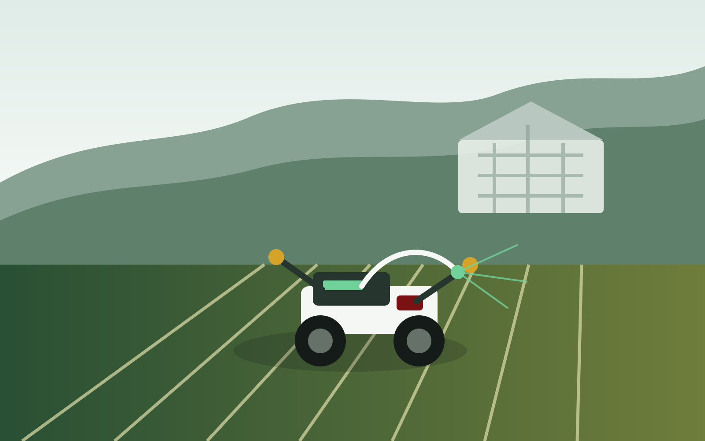

Mechatronics and Rapid Prototyping
Work areas for robotic arms, mechatronic implements, electronics, sensors, and agricultural machinery components.
ARTS activities are based at the Agribiosystems Machinery and Power Engineering Division of IABE, CEAT, UPLB. Open the laboratory location in Google Maps.
Work areas for robotic arms, mechatronic implements, electronics, sensors, and agricultural machinery components.

Spaces and workflows for unmanned ground and aerial vehicle prototyping, localization, navigation, and field trials.

Testbeds for IoT monitoring, telemetry dashboards, crop monitoring systems, and decision-support prototypes.
Facilities support the full technology cycle: mentorship, training, prototype development, testing, documentation, demonstrations, and research output preparation.
